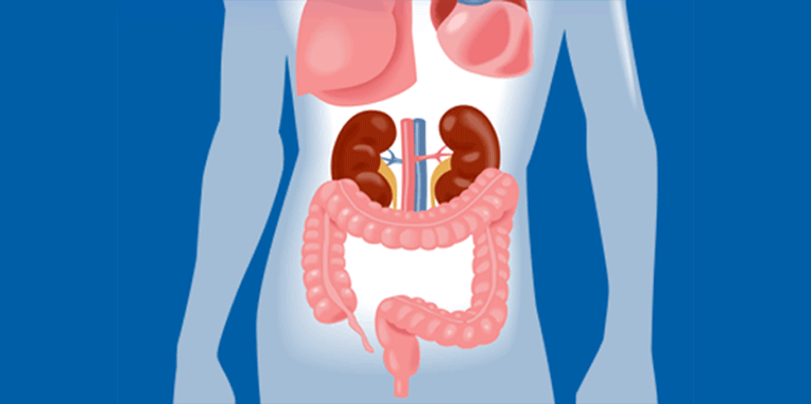

肠道传染病的预防
肠道传染病的预防
（一）什么是肠道传染病？
肠道传染病是一组经消化道传播的疾病。常见的主要有伤寒、副伤寒、细菌性痢疾、霍乱、甲型肺炎、细菌性食物中毒等。肠道传染病病人的病原体从病人和病原携带者的粪便、呕吐物中排出，污染了周围环境，再通过水、食物、手、苍蝇、蟑螂、等媒介经口腔进入胃肠道，在人体内繁殖、产生毒素引起发病，并继续排出病原体再传染给其他健康人。
（二）肠道传染病的传播途径
1、经水传播 由于生活饮水源被肠道传染病人和病原携带者的粪便、呕吐物中排入水中或洗涤病人的衣裤、器具、手等造成了水源污染，可引起霍乱、伤寒、细菌性痢疾的暴发流行。
2、经食物传播 在食品的加工、储存、制作、运输的销售等过程中被肠道传染病的病原体污染，可造成局部的流行和暴发流行。
3、接触传播 通过握手、使用或接触过病人的衣物、文具、门具、门把手、人民币等造成病原体传播。
4、昆虫传播 有些肠道传染病的病原体可在人体内存活一段时间，通过到处活动的苍蝇、蟑螂等昆虫进行传播。
（三）预防措施
预防肠道传染病的关键是把好“病从口入”这一关，要注意饮食和饮水卫生，养成良好的卫生习惯，做好预防工作。
1、积极开展爱国卫生运动，加强对粪便、垃圾和污水的卫生管理，发动群众灭蝇、灭蟑螂。
2、注意饮食卫生。不吃腐烂变质食物，生吃蔬菜、瓜果一定要洗烫、剩饭、剩菜要煮后再吃，食具要经常消毒。饮食服务行业、食品加工销售单位和集体食堂，要认真执行食品卫生法。
3、搞好饮水卫生。不喝生水，喝开水。保护好水源，严防污染。饮水用具要定期消毒，保证饮水卫生。
4、讲究个人卫生。养成饭前、便后洗手的习惯。常剪指甲、勤换衣服。食堂、饮食业工作人员更要讲究个人卫生，定期体格检查，发现有传染病，应及时调离工作岗位。
夏季预防食物中毒八注意
细菌性食物中毒具有明显的季节性，多发生在气候潮热的季节。这是由于气温高、湿度大，适合细菌生长繁殖。
细菌在被污染的食物中大量繁殖，产生大量毒素，包括肠毒素和细菌裂解后释放出的内毒素，是发生食物中毒的基本条件。其主要临床表现为腹痛、腹泻、恶心、呕吐等胃肠道症状，常在进食数小时后发病，常见致病菌有沙门氏菌、副溶血性弧菌、大肠杆菌类、能产生肠毒素的金黄色葡萄球菌等。
预防细菌性食物中毒关键是抑制细菌繁殖，大致要注意8条：
一、挑选食品，要选择新鲜、无变质的。
二、食物在食用前应充分清洗和浸泡。
三、挑海鲜，最好选择活的。
四、为防止熟食被细菌污染，切生的食品和熟的食品所用的刀、砧板要分开；做凉拌菜一定要洗净消毒，最好不要吃隔顿凉拌菜。
五、冰箱里存放的食物应尽快吃完，冷冻食品进食前要加热，因为不少细菌在冷藏、冷冻条件下不会死亡，决不能把冰箱当作食品保险箱。
六、有些细菌产生的毒素不怕高温，因此并不是食物加热后就可以吃了，一些剩饭、剩菜经加热后仍有引起食物中毒的危险，常温下保存时间不得超过2小时。
七、坚持锻炼，提高机体抵抗疾病的能力。
八、消灭苍蝇、蟑螂、红蚂蚁等细菌的传播媒介